전자산업기사 (2009-08-30 기출문제)
1과목: 전자회로
1. 전압 증폭도가 항상 1보다 작은 증폭회로는?
- 컬렉터 접지 증폭회로
- 이미터 접지 증폭회로
- 베이스 접지 증폭회로
- 게이트 접지 증폭회로
(정답률: 67%)

2. 이상적인 연산증폭기의 두 입력 전압이 V1 = V2일 때 출력 전압으로 가장 적합한 것은?
- 0
- V1
- 2V1
- 무한대
(정답률: 88%)
3. 어떤 증폭회로의 입력전력이 1[W], 출력전력이 10[W] 일 때 전력이득은 약 몇 [dB] 인가?
- 0
- 10
- 20
- 40
(정답률: 70%)
4. 다음 pulse 파의 duty factor(duty cycle)는 얼마인가?
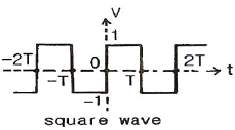
- 9[%]
- 10[%]
- 25[%]
- 50[%]
(정답률: 62%)
5. 다음과 같은 회로에서 출력 전압 VO는?
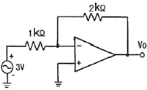
- -3[V]
- -4[V]
- -5[V]
- -6[V]
(정답률: 84%)
6. 전압이득이 40[dB]인 저주파증폭기에서 출력신호의 왜율이 10[%]일 때, 이를 1[%]로 개선하기 위해서는 부궤환율(β)은 얼마로 하여야 하는가?
- 0.01
- 0.03
- 0.⑤
- 0.09
(정답률: 76%)
7. 다음 중 전류 직렬 부궤환 증폭기의 특징으로 옳지 않은 것은?
- 입력 임피던스 증가
- 출력 임피던스 감소
- 주파수 대역폭 증가
- 비직선 일그러짐 감소
(정답률: 57%)
8. 트랜지스터를 증폭기로 사용할 때의 동작 영역으로 옳은 것은?
- 차단영역
- 포화영역
- 활성영역
- 차단영역 및 포화영역
(정답률: 88%)
9. 차동 증폭기에서 동상신호제거비(CMRR)에 대한 설명으로 옳은 것은?
- 이 값이 클수록 우수한 증폭기가 된다.
- 차동 이득은 작을수록 우수한 증폭기가 된다.
- 동상 이득은 클수록 우수한 증폭기가 된다.
- 이 값이 크면 증폭기의 잡음출력이 크다.
(정답률: 88%)
10. 이미터 공통 증폭회로에서 IB가 10[μA]일 때, IC가 500[μA]이다. 이것을 베이스 공통 증폭회로로 했을 때 전류증폭률 α는 약 얼마인가?
- 0.96
- 0.98
- 1
- 50
(정답률: 70%)
11. 발진회로의 특성에 대한 설명으로 적합하지 않은 것은?
- 정궤환을 이용한다.
- 입력 신호가 필요 없다.
- 궤환루프의 이득이 0 이다.
- 바크하우젠의 발진 조건은 |βA = 1| 이다.
(정답률: 79%)
12. 다음 중 연산증폭기의 스위칭 특성에 가장 크게 영향을 주는 것은?
- 입력 임피던스
- 슬루 레이트
- 출력 오프셋 전압
- 출력 임피던스
(정답률: 91%)
13. AM에서 1000[kHz]의 반송파가 35[kHz] 사인파에 의해 변조될 때 상측파대 주파수는?
- 1000[kHz]
- 1035[kHz]
- 1070[kHz]
- 1124[kHz]
(정답률: 79%)
14. 60[Hz], 3상 전파 정류회로에서 생기는 맥동주파수는 몇 [Hz] 인가?
- 60[Hz]
- 120[Hz]
- 180[Hz]
- 360[Hz]
(정답률: 85%)
15. 다음 전계효과 트랜지스터(FET)에 대한 설명 중 적합하지 않은 것은?
- 전류제어형 소자이다.
- BJT 보다 높은 입력저항을 갖는다.
- BJT 보다 이득대역폭적(GㆍB)이 작다.
- BJT 보다 온도변화에 따른 안정성이 높다.
(정답률: 62%)
16. 다음의 연산증폭기회로에서 출력 저압 VO는?
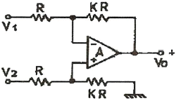
- VO = K (V2 - V1)
- VO = K V2 - (K + 1) V1
- VO = (K + 1) V2 - K V1
- VO = (K + 1)(V2 - V1)
(정답률: 76%)
17. 다음 중 변조를 하는 이유에 대한 설명으로 적합하지 않은 것은?
- 잡음과 간섭을 줄이기 위하여
- 전파속도를 빠르게 하기 위하여
- 다중화가 가능하도록 하기 위하여
- 시스템을 소형화하기 위하여
(정답률: 58%)
18. 어떤 정류기의 부하 양단 평균전압이 200[V]이고 맥동률은 2[%]라고 한다. 교류분의 실효치는 몇 [V] 인가?
- 10[V]
- 5[V]
- 4[V]
- 2[V]
(정답률: 66%)
19. 전력증폭기의 직류 공급 전압 및 전류가 10[V], 400[mA]이고, 부하에서의 출력 전력이 3.6[W]일 때 이 증폭기의 효율은?
- 70[%]
- 75[%]
- 90[%]
- 95[%]
(정답률: 74%)
20. 다음 중 궤환 증폭기에 대한 설명으로 옳은 것은?
- 부궤환은 증폭회로에 정궤환은 발진회로에 응용된다.
- 부궤환의 경우 입력신호와 궤환신호의 위상은 같다.
- 부궤환의 경우 이득이 증가하며, 안정된 이득을 얻을 수 있다.
- 부궤환의 경우 이득은 증가하는 반면 대역폭은 좁아진다.
(정답률: 76%)
2과목: 전기자기학 및 회로이론
21. 다음 중 실용상 영(zero) 전위의 기준으로 가장 적합한 것은?
- 자유공간
- 무한 원점
- 철제부분
- 대지
(정답률: 90%)
22. B= 0.2aX - 0.3aY + 0.5aZ [Wb/m2]인 자계내에서 aX 방향으로 106[m/s]인 속도로 운동하고 있는 1개의 전자가 있다. 이 때 어떤 전계가 작용하면 전자에 작용하는 전체 힘이 영(zero)이 되는가?
- (5aY + 3aZ)×105
- (3aY + 1aZ)×105
- (5aX + 3aZ)×105
- (3aX + 3aZ)×105
(정답률: 66%)
23. 다음 물질 중에서 비유전율(εs)이 가장 큰 것은?
- 물(증류수)
- 유리
- 변압기 기름(절연유)
- 종이
(정답률: 84%)
24. 두 코일이 있다. 한 코일의 전류가 매초 120[A]의 비율로 변화할 때 다른 코일에 15[V]의 기전력이 발생하였다면 두 코일의 상호인덕턴스는?
- 0.125[H]
- 0.255[H]
- 0.515[H]
- 0.615[H]
(정답률: 81%)
25. 다음중 변위전류에 관한 설명으로 가장 알맞은 것은?
- 변위전류밀도는 전속밀도의 시간적 변화율이다.
- 자유공간에서 변위전류가 만드는 것은 전계이다.
- 변위전류는 도체와 가장 관계가 깊다.
- 시간적으로 변화하지 않는 계에서도 변위전류는 흐른다.
(정답률: 72%)
26. 면적이 매우 넓은 2매의 도체판을 d[m] 간격으로 수평으로 평행되게 배치하였을 때 그 평행 도체판 사이에 놓인 전자가 정지하고 있도록 하기 위해서는 그 도체판 사이에 몇 [V]의 전위차를 가하여야 하는가? (단, m은 전자의 질량, g는 중력가속도, e는 전자의 전하량이다.)
- mged
- ed/mg
- mgd/e
- mge/d
(정답률: 42%)
27. E = XaE = XaX - YaY [V/m]일 때 점(6, 2)[m]를 통과하는 전기력선의 방정식은?
- y = 12x
- y = 12/x
- y = x/12
- y = 12x2
(정답률: 52%)
28. 비유전율 εs = 16, 비투자율 μs = 1인 매질에서의 전자파의 파동임피던스는?
- 30π[Ω]
- 40π[Ω]
- 80π[Ω]
- 160π[Ω]
(정답률: 39%)
29. 자극의 크기가 4[Wb]인 점자극으로부터 4[m] 떨어진 점의 자계의 세기는 약 몇 [A/m] 인가?
- 1.2×104[A/m]
- 1.6×104[A/m]
- 6.3×104[A/m]
- 7.9×104[A/m]
(정답률: 58%)
30. 공기 중에 d[m]의 간격으로 평행한 무한히 긴 직선 도선 A, B에 전류 I1[A], I2[A]가 흐를 때 평행한 도선간에 흐르는 전류에 의하여 작용하는 힘[N/m]은? (단, 흐르는 두 전류의 방향은 같은 방향이라고 한다.)
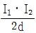
×10-7[N/m]의 흡인력 ×10-7[N/m]의 반발력
×10-7[N/m]의 반발력 ×10-7[N/m]의 흡인력
×10-7[N/m]의 흡인력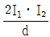
×10-7[N/m]의 반발력
(정답률: 71%)
31. 100[mH]인 코일에 100[V], 60[Hz]의 교류전압을 인가했을 때 코일의 유도성 리액턴스의 값은?
- 37.68[H]
- 37.68[Ω]
- 68.25[H]
- 68.25[Ω]
(정답률: 66%)
32. 다음 중 파고율(crest factor)을 나타낸 것은?
- 최대값/평균값
- 실효값/평균값
- 실효값/최대값
- 최대값/실효값
(정답률: 75%)
33. 다음 그림의 회로가 정저항 회로이면, 저항 R의 값은? (단, L = 100[mH]이고, C = 0.1[μF]이다.)
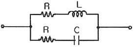
- 103[Ω]
- 104[Ω]
- 106[Ω]
- 108[Ω]
(정답률: 64%)
34. 다음 회로에서 t = 0에 S를 열면 이 회로의 시정수는 몇 [μs] 인가?
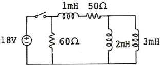
- 10
- 20
- 30
- 40
(정답률: 36%)
35. Ae-αt의 라플라스 변환은?
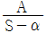
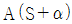
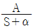
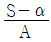
(정답률: 72%)
36. 인덕턴스 L1, L2가 각각 3[mH], 6[mH]인 두 코일 간의 상호 인덕턴스 M 이 4[mH]라고 하면 결합계수 k는?
- 약 0.94
- 약 0.44
- 약 0.89
- 약 1.12
(정답률: 67%)
37. 다음 ( ) 안에 내용은 어떤 요소의 전달함수인가?
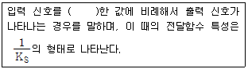
- 비례
- 미분
- 적분
- 1차 지연
(정답률: 68%)
38. 순시값이 i = Imsin(wt - θ) 인 정현파 전류의 실효값은?
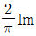
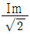
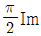
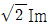
(정답률: 75%)
39. 4단자 회로망에서 출력 단자를 단락할 때, 역방향 전류 이득을 나타내는 파라미터는?
- A
- B
- C
- D
(정답률: 76%)
40. 다음에서 설명하는 정리는?
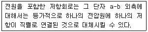
- 테브난의 정리
- 노튼의 정리
- 밀만의 정리
- 중첩의 정리
(정답률: 49%)
3과목: 전자계산기일반
41. 가상 메모리(virtual memory)에 대한 설명 중 옳지 않은 것은?
- 컴퓨터시스템의 처리속도를 개선하기 위한 방법이다.
- 컴퓨터의 기억용량을 확장하기 위한 것이 목적이다.
- 관리 방식은 paging과 segmentation 기법이 있다.
- 주로 하드웨어 보다는 소프트웨어로 실현된다.
(정답률: 41%)
42. 마이크로컴퓨터와 마이크로프로세서에 관한 설명 중 틀린 것은?
- 마이크로프로세서는 3개의 (V)LSI 칩으로 구성되어 마이크로컴퓨터에 사용된다.
- 주기억장치에 저장되어 있는 명령을 해석하고 실행하는 기능을 한다.
- 최초의 마이크로프로세서는 1971년 미국 Intel사가 개발한 4004이다.
- 마이크로컴퓨터의 중앙처리장치는 마이크로프로세서로 되어 있다.
(정답률: 54%)
43. 다음 검색 방법 중 자료가 정렬되어 있지 않아도 검색이 가능한 것은?
- 순차 검색
- 이진 검색
- 블록 검색
- 피보나치 검색
(정답률: 45%)
44. 부동소수점(floating point) 표현을 위한 IEEE 754 표준 중 복수 정밀도 형식에서 바이어스 값은?
- 64
- 127
- 1023
- 1024
(정답률: 55%)
45. 다음 진리표(truth table)가 나타내는 회로는? (단, A, B는 입력이고, Z는 출력이다.)
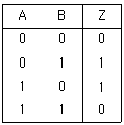
- AND
- EX-OR
- OR
- NAND
(정답률: 74%)
46. 패리티검사(Parity Check) 방법에 대한 설명으로 옳은 것은?
- 오류(error) 검출 및 교정이 가능하다.
- BCD 코드에서만 사용된다.
- 동시에 짝수개의 오류가 발생되면 오류 검출이 불가능하다.
- 데이터에서 1의 값을 갖는 비트의 수를 홀수개로 만드는 홀수 패리티검사 방법만이 사용된다.
(정답률: 41%)
47. 다음 그림과 같은 A, B 레지스터에 있는 2개의 자료에 대하여 ALU에서 OR 연산이 이루어졌을 때 그 결과가 출력되는 C 레지스터의 내용은?
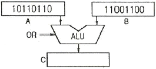
- 11101110
- 10110110
- 10000000
- 11111110
(정답률: 79%)
48. 다음 C 언어의 자료형 중 INTEGER TYPE이 아닌 것은?
- int
- long
- double
- short
(정답률: 73%)
49. -426을 Pack 10진수 형식으로 표현한 것은?
- 0100 0010 0110 1101
- 0100 0010 0110 1100
- 1101 0100 0010 0110
- 1100 0100 0010 0110
(정답률: 72%)
50. 오퍼랜드 형식에 따라 명령어를 구분할 때, 그 분류에 포함되지 않는 것은?
- 메모리 참조 명령
- 레지스터 참조 명령
- 입출력 명령
- 버스 참조 명령
(정답률: 60%)
51. 오퍼랜드(operand)가 명령 그 자체 내에 있는 어드레싱 모드(addressing mode)는?
- 암시 모드(implied mode)
- 즉시 모드(immediate mode)
- 레지스터 모드(register mode)
- 레지스터 간접 모드(register indirect mode)
(정답률: 81%)
52. 4비트의 연산코드(OP Code)를 사용한 명령어 형식(Instruction Format)에서 가능한 연산의 최대 수는?
- 4
- 8
- 16
- 32
(정답률: 78%)
53. 캐시메모리에서 특정 내용을 찾는 방식 중 매핑 방식에 주로 사용되는 메모리는?
- 버블 메모리
- 가상 메모리
- 연관 메모리
- 스택 메모리
(정답률: 52%)
54. 레지스터 내용을 1비트씩 3회 오른쪽으로 산술 이동(shift right) 시킨 후의 레지스터 값은?
- multiplied by 8
- divided by 8
- divided by3
- multiplied by 3
(정답률: 82%)
55. C 언어 "int a[50];"에서 a는 몇 개의 기억 장소를 확보하는가?
- 49
- 50
- 51
- 5⑤0
(정답률: 65%)
56. 데이터를 마이크로프로세서를 거치지 않고 주변 장치가 직접 메모리에 전송하는 방식은?
- DMA
- ALU
- MPU
- MDR
(정답률: 81%)
57. 입출력 포트가 기억장치 주소 공간의 일부인 형태로 하나의 읽기/쓰기 신호만이 필요하며 기억장치의 주소와 입출력 장치의 주소의 구별이 없는 입출력 제어 방식은?
- Programmed I/O 방식
- DMA(Direct Memory Access) 방식
- I/O mapped I/O 방식
- Memory Mapped I/O 방식
(정답률: 58%)
58. 다음 중 조합논리 회로로만 나열한 것은?
- Adder, Flip-Flop
- Multiplexer, Encoder
- Decoder, Counter
- Ring counter, Subtracter
(정답률: 81%)
59. 다음 중 논리적 연산에서 불필요한 비트나 문자를 제거할 때 사용하는 연산은?
- OR 연산
- AND 연산
- Compare 연산
- EX-OR 연산
(정답률: 85%)
60. 다음 중 순서도를 작성하는 이유로 가장 타당한 것은?
- 시스템의 성능을 분석하기 위하여 한다.
- C언어의 코딩을 생략하기 위하여 한다.
- 프로그램을 작성할 경우 처리되는 자료의 흐름이 잘 이해되도록 하기 위하여 한다.
- 시스템 설계를 하기 위하여 한다.
(정답률: 84%)
4과목: 전자계측
61. 전압 제어 발진기 방식을 사용한 디지털 전압계의 구성요소가 아닌 것은?
- 디지털 표시장치
- 기준시간 발생기
- 순서기
- 정류기
(정답률: 60%)
62. 리플(Ripple) 함유량이 3[%]이고, 맥동분 전압이 6[V]일 때, 직류 전압은?
- 250[V]
- 200[V]
- 125[V]
- 100[V]
(정답률: 62%)
63. 감도가 높고, 정밀한 측정을 요구하는 경우 사용하는 측정법 중 가장 적합한 것은?
- 영위법
- 편위법
- 반경법
- 직편법
(정답률: 84%)
64. 진동편형 주파수계의 특징 중 옳지 않은 것은?
- 지시가 연속적이다.
- 지시의 신뢰성이 높다.
- 1000[Hz] 이하에서 사용된다.
- 구조가 간단하고, 전압의 파형에 영향이 없다.
(정답률: 50%)
65. 열전대형 계기에서 도선의 인덕턴스와 표유용량에 의해 발생되는 오차는?
- 공진오차
- 배분오차
- 전위오차
- 표피효과오차
(정답률: 66%)
66. 계량할 수 없는 불규칙적인 원인으로 생기는 오차로 실험을 반복하여 그 결과를 종합분석하고, 통계적으로 계산하여 어느 정도 오차를 시정할 수 있는 것은?
- 계통적 오차
- 개인적인 오차
- 우연 오차
- 기기적인 오차
(정답률: 63%)
67. 정류형 계기의 특징으로 옳지 않은 것은?
- 전압계는 고전압용으로 적합하다.
- 가동코일용 계기를 사용하므로 감도가 높다.
- 정류방식은 브리지형 전파 정류방식을 사용한다.
- 피측정 파형이 정현파가 아니면 파형 오차를 초래한다.
(정답률: 45%)
68. 제조된 저항기가 1.14[kΩ]에서 1.26[kΩ]의 저항을 1.2[kΩ]이라고 표시하였다면 허용 오차는?
- ±10[%]
- ±5[%]
- ±3[%]
- ±2[%]
(정답률: 68%)
69. 증폭기의 왜율 측정에 해당되지 않는 것은?
- 감쇠기 법
- 공진 Bridge 법
- 필터 법
- 왜율계
(정답률: 65%)
70. 다음 기록 계기의 기록 방식 중 정밀도가 가장 높은 방식은
- 펜식
- 직동식
- 타점식
- 자동평형식
(정답률: 82%)
71. 다음 중 스트로보스코프(stroboscope)로 측정할 수 있는 것은?
- 전류
- 조도
- 전압
- 회전수
(정답률: 79%)
72. 역률이 0.001인 콘덴서의 Q는?
- 10
- 100
- 1000
- 10000
(정답률: 82%)
73. 가동 코일형 전류계에서 지침의 회전각 θ는 다음 중 어느 것에 비례하는가?
- 자속밀도의 자승
- 가동코일의 전류
- 스프링 정수
- 전류의 자승
(정답률: 70%)
74. 스위프 발진기로서 조정할 수 없는 것은?
- 고주파 회로의 주파수 특성
- 중간 주파 회로의 주파수 특성
- TV 수상기의 종합 선택도 특성
- 편향 회로의 직선성 조정
(정답률: 35%)
75. 계기 구성 3요소에 속하는 제어 방법의 종류가 아닌것은?
- 스프링 제어
- 공기 제어
- 전자 제어
- 교차 코일 제어
(정답률: 39%)
76. 비트(beat) 발진기의 계통도에서 고정 q라진기의 주파수를 100[kHz]로 선정한다면 빈칸의 회로는?
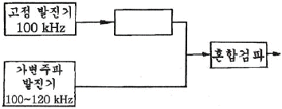
- 저주파 발진기
- 신호 감쇠기
- 저역 여파기
- 고역 여파기
(정답률: 62%)
77. 다음 중 오실로스코프의 휘도조정은 어느 것으로 하는 가?
- 제어그리드 전압조정
- 애노드 전압조정
- 수직편향판 전압조정
- 수평편향판, 수직편향판 전압조정
(정답률: 46%)
78. 정전용량 CV인 정전형 전압계에 용량 C인 콘덴서를 직렬로 연결하고 전압을 측정하여 V1의 지시를 읽었다. 입력 전류바의 크기 V는?
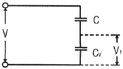
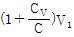
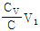
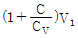
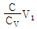
(정답률: 54%)
79. 참값을 T, 측정값을 M이라고 할 때 보정(α)를 나타내는 식은?
- α = M - T
- α = T - M
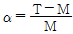
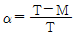
(정답률: 73%)
80. Q 미터의 구성 부분에 포함되는 것은?
- 계수부
- 게이트부
- 소인부
- 동조부
(정답률: 39%)